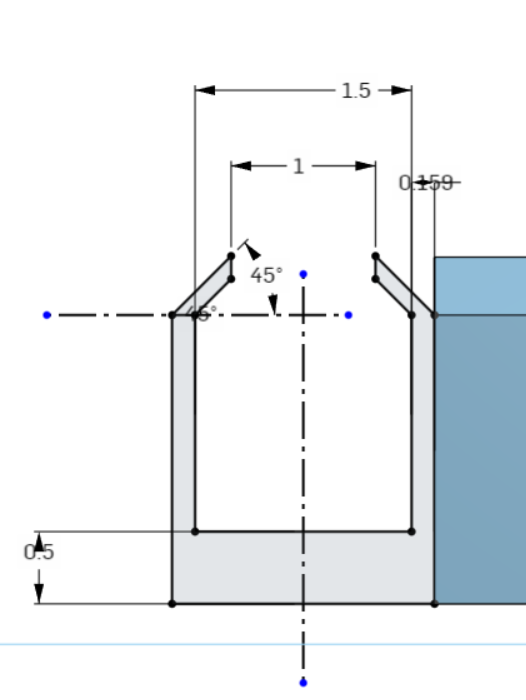
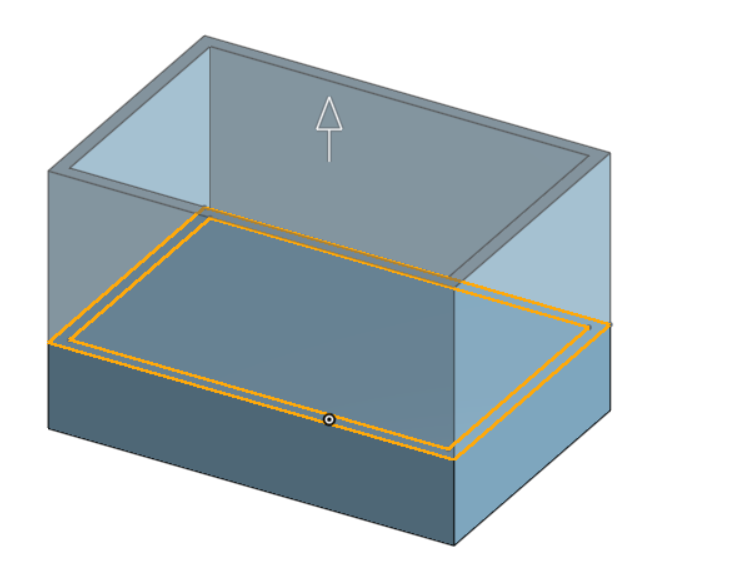
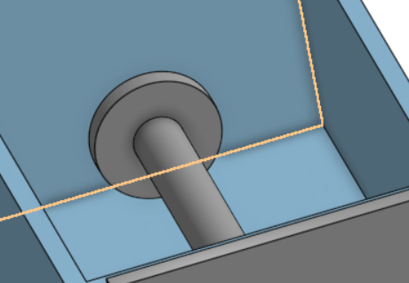

零件尺寸
〈集球門〉第三版
初步草圖 進球口

出球口


使用疊成拉伸把外圍先做出來，原本是想說看可不可以直接把孔一起用好，但Onshape似乎沒辦法做到，只好把孔另外再做出來


疊成拉伸

利用草圖四的邊線來繪製通道，並伸長2英吋


在使用右側視圖畫出與上一個通道一樣的圖，伸長2英吋並選擇對稱


而直向通道與橫向通道，因為有縫隙會造成簡化的難度，所以就伸長到下一個面

因為伸長的關係所以要再開一個洞

做這個斜坡是因為怕球撞到通道會反彈而不會滾去擊球裝置的位置，也可以讓球被擊出後能順利的進入軌道

延伸的通道是為了擊球裝置的最大伸長路徑

〈擊球檯〉
長為2.362英吋，寬為1.575英吋，向上伸長0.5英吋

邊框向內偏移0.079英吋，向上伸長1英吋


要先開孔

在內部畫一個比孔小一點的圓為擊球桿

1.3X1.3的正方形，伸長0.079英吋

在尾端畫一個阻擋物以防擊球桿整支飛出去


Onshape << Previous Next >> 細部設計